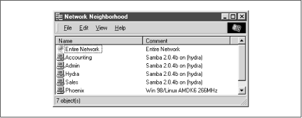

Using Samba
Robert Eckstein, David Collier-Brown, Peter Kelly1st Edition November 1999
1-56592-449-5, Order Number: 4495
416 pages, $34.95
|
|
|
|
|
Using SambaRobert Eckstein, David Collier-Brown, Peter Kelly1st Edition November 1999 1-56592-449-5, Order Number: 4495 416 pages, $34.95 |
4.7 Virtual Servers
Virtual servers are a technique for creating the illusion of multiple NetBIOS servers on the network, when in reality there is only one. The technique is simple to implement: a machine simply registers more than one NetBIOS name in association with its IP address. There are tangible benefits to doing this.
The accounting department, for example, might have an
accountingserver, and clients of it would see just the accounting disks and printers. The marketing department could have their own server,marketing, with their own reports, and so on. However, all the services would be provided by one medium-sized Unix workstation (and one relaxed administrator), instead of having one small server and one administrator per department.Samba will allow a Unix server to use more than one NetBIOS name with the
netbiosaliasesoption. See Table 4.6.
Table 4.6: Virtual Server Configuration Options Option
Parameters
Function
Default
Scope
netbios aliasesList of NetBIOS names
Additional NetBIOS names to respond to, for use with multiple "virtual" Samba servers.
None
Global
4.7.1 netbios aliases
The
netbiosaliasesoption can be used to give the Samba server more than one NetBIOS name. Each NetBIOS name listed as a value will be displayed in the Network Neighborhood of a browsing machine. When a connection is requested to any machine, however, it will connect to the same Samba server.This might come in handy, for example, if you're transferring three departments' data to a single Unix server with modern large disks, and are retiring or reallocating the old NT servers. If the three servers are called
sales,accounting, andadmin, you can have Samba represent all three servers with the following options:[global] netbios aliases = sales accounting admin include = /usr/local/samba/lib/smb.conf.%LSee Figure 4.7 for what the Network Neighborhood would display from a client.When a client attempts to connect to Samba, it will specify the name of the server that it's trying to connect to, which you can access through the
%Lvariable. If the requested server issales, Samba will include the /usr/local/samba/lib/smb.conf.sales file. This file might contain global and share declarations exclusively for the sales team, such as the following:[global] workgroup = SALES hosts allow = 192.168.10.255 [sales1998] path = /usr/local/samba/sales/sales1998/ ...This particular example would set the workgroup to SALES as well, and set the IP address to allow connections only from the SALES subnet (192.168.10). In addition, it would offer shares specific to the sales department.
Figure 4.7: Using NetBIOS aliases for a Samba server

 |
 |
 |
| 4.6 Networking Options with Samba |
 | 4.8 Logging Configuration Options |
Back to: Using Samba
© 1999, O'Reilly & Associates, Inc.